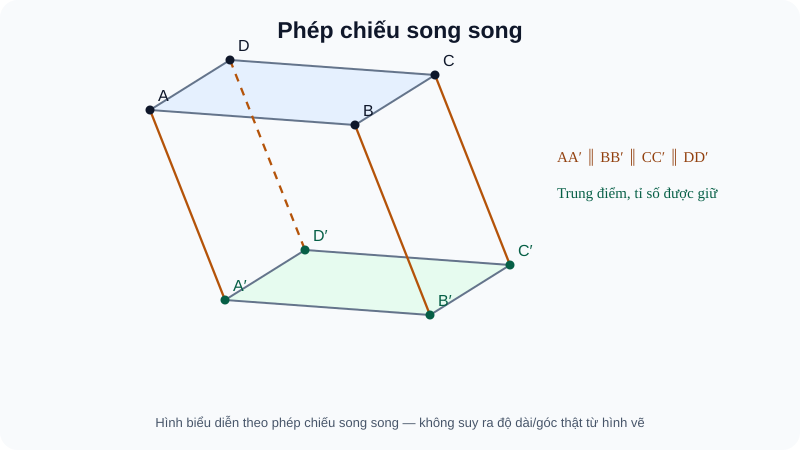
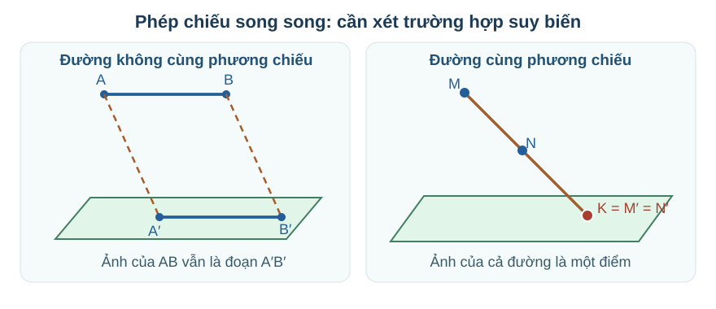

Bài 14. Phép chiếu song song
TOÁN 11 · CHƯƠNG IV · KẾT NỐI TRI THỨC
Từ bóng cửa sổ tới phép chiếu song song: ảnh được dựng thế nào, giữ quan hệ gì và vì sao hình biểu diễn không cho phép đo góc, đo độ dài thật.
1. Khám phá kiến thức
Khi ánh nắng chiếu qua khung cửa sổ, bóng của mỗi điểm trên khung rơi xuống một vị trí ở sàn nhà. Trong mô hình toán học, các tia nắng được coi là cùng phương. Thay vì đo bóng theo cảm giác, ta dùng phép chiếu song song để dựng ảnh của từng điểm, rồi từ các ảnh ấy vẽ hình biểu diễn cả vật thể. Bài học có ba mục theo SGK: phép chiếu, các tính chất, hình biểu diễn.
1.1. Phép chiếu song song
Giả sử sàn nhà là mặt phẳng \((P)\), còn phương nắng được xác định bởi đường thẳng \(\Delta\) cắt \((P)\) tại đúng một điểm. Qua điểm \(M\) trên khung cửa, vẽ một đường thẳng cùng phương \(\Delta\). Đường này cắt \((P)\) tại duy nhất một điểm \(M'\): đó là hình chiếu song song của \(M\). Nếu \(M\) đã nằm trên \((P)\), điểm ảnh chính là \(M\). Vì mọi điểm đều được chiếu theo một phương cố định, ta nhận được hình chiếu của cả khung cửa bằng tập hợp các hình chiếu từng điểm.

Vì sao phải hạn chế phương chiếu? Nếu \(\Delta\) song song với \((P)\), đường chiếu qua một điểm ngoài \((P)\) có thể không gặp mặt chiếu, nên không xác định được ảnh như mong muốn. Vì thế trong phần học này SGK chọn đường chỉ phương \(\Delta\) cắt mặt phẳng chiếu tại đúng một điểm (không nằm trong mặt phẳng chiếu và không song song với mặt phẳng chiếu). Đây là điều kiện để ảnh của mỗi điểm có thể xác định.
Vận dụng. Mặt chiếu là \((P)\), phương chiếu \(\Delta\) cắt \((P)\). Điểm \(A\in(P)\); điểm \(B\notin(P)\). Ảnh của \(A\) là gì, và cần dựng thế nào để được ảnh \(B'\) của \(B\)?
Đối chiếu
Lời giải: Vì \(A\) nằm sẵn trên mặt chiếu, \(A'=A\). Qua \(B\), vẽ đường thẳng song song với phương \(\Delta\) (hoặc trùng \(\Delta\) nếu \(B\in\Delta\)); giao duy nhất với \((P)\) là \(B'\). Không chọn đường chiếu khác phương nắng.
Kiểm lỗi
Nếu chọn mỗi điểm một hướng riêng, đó không còn là cùng một phép chiếu song song. Nếu phương \(\Delta\parallel(P)\), từ điểm ngoài mặt không dựng được giao điểm; phải kiểm điều kiện trước.
1.2. Tính chất của phép chiếu song song
Hãy xét một thanh thẳng \(AB\) có trung điểm \(M\). Dựng các ảnh \(A',M',B'\). Trong trường hợp thanh không cùng phương chiếu, ba ảnh vẫn thẳng hàng theo thứ tự ấy; vì \(AM=MB\), ảnh cũng có \(A'M'=M'B'\). Vậy trung điểm được giữ lại, mặc dù độ dài \(A'M'\) chưa chắc bằng độ dài \(AM\). Phép chiếu giữ tỉ lệ trên cùng một đường, không nhất thiết giữ từng độ dài.
Nếu hai thanh song song \(a,b\), hình chiếu của chúng có thể là hai đường song song hoặc trùng nhau. Vì sao trùng? Có thể hai thanh nằm trên hai vị trí khác nhau nhưng trên cùng một mặt phẳng song song với phương chiếu; các tia chiếu đưa chúng về đúng một đường trên mặt chiếu. Hai đường cắt nhau cũng có thể cho các ảnh trùng nhau hoặc một ảnh là điểm; không suy ngược quan hệ giữa hai đường thật chỉ từ hình chiếu.
Tuy nhiên có một ngoại lệ dễ bị bỏ qua khi nêu tính chất: một đường thẳng cùng phương với phương chiếu luôn có ảnh là một điểm. Khi ấy không thể nói ảnh của nó vẫn là đường thẳng, hoặc lấy tỉ số hai đoạn ảnh có độ dài dương. Để áp dụng các phát biểu SGK về đường, tia, đoạn và tỉ số, ta phải xét các hình chiếu không suy biến.

Ví dụ nếu \(A,M,B\) thẳng hàng theo thứ tự và \(AM:MB=2:3\), ảnh không suy biến sẽ có \(A'M':M'B'=2:3\). Nếu \(AB=10\) cm, \(AM=4\) cm, \(MB=6\) cm; nhưng nếu ảnh \(A'B'=15\) cm thì \(A'M'=6\) cm, \(M'B'=9\) cm — các độ dài đã đổi, còn tỉ số vẫn 2:3. Không được tự ghi \(A'M'=4\) cm.
Vận dụng. Cho \(A,M,B\) thẳng hàng theo thứ tự, \(AM:MB=2:3\). Phép chiếu song song cho \(A'\ne B'\) và \(A'B'=20\) cm. Tính \(A'M'\) và \(M'B'\). Nếu phương chiếu trùng phương \(AB\), em có được thực hiện phép chia tỉ số ấy không?
Đối chiếu
Lời giải: Các ảnh giữ tỉ số \(A'M'/M'B'=2/3\) và \(A'M'+M'B'=20\), nên \(A'M'=8\) cm, \(M'B'=12\) cm. Nếu \(AB\) cùng phương chiếu, \(A'=M'=B'\), các đoạn ảnh đều dài \(0\), tỉ số \(0/0\) không xác định; không áp dụng công thức.
Kiểm lỗi
Phép chiếu không bảo toàn độ dài, nên không đặt \(A'M'=AM\). Khi ảnh bị co thành điểm, không dùng tỉ số đoạn ảnh: cần kiểm \(A'\ne B'\) trước.
1.3. Hình biểu diễn của một hình không gian
Bài 10 đã dùng các hình vẽ trên giấy để thể hiện khối trong không gian. Nay ta hiểu cách tạo chúng: hình biểu diễn là hình chiếu song song trên một mặt phẳng, hoặc một hình đồng dạng với hình chiếu đó. Mục đích không phải làm cho tất cả kích thước đúng như vật thật, mà giúp nhìn được cấu trúc, quan hệ điểm–đường–mặt và các cạnh bị che khuất.
Khi một hình phẳng nằm trong mặt phẳng không chứa phương chiếu (không chứa đường cùng phương chiếu), ảnh của các tam giác vẫn là tam giác; hình vuông, hình chữ nhật, hình thoi và hình bình hành cho ảnh là hình bình hành; hình thang có cặp cạnh đáy song song vẫn biểu diễn bằng hình thang với hai đáy tương ứng song song, và tỉ số hai đáy được giữ; hình tròn có hình biểu diễn là hình elip (hình tròn có thể là trường hợp đặc biệt). Không được nhìn hình bình hành rồi khẳng định vật thật không phải hình vuông.
Để vẽ hình chóp \(S.ABCD\) có đáy là hình bình hành, ta vẽ một hình bình hành \(ABCD\) thể hiện đáy, chọn điểm biểu diễn đỉnh \(S\) sao cho hình không suy biến và các cạnh dễ phân biệt; điểm này không nhất thiết nằm ngoài hình bình hành trên giấy, rồi nối \(S\) với bốn đỉnh. Nét liền thể hiện cạnh nhìn thấy, nét đứt thể hiện cạnh khuất theo góc quan sát đã chọn. Khi hình biểu diễn là kết quả phép chiếu hợp lệ, sự thẳng hàng và tỉ số trên một đường vẫn được giữ; nhưng góc vuông và độ dài nhìn trên giấy không phải góc và độ dài thực.
Vận dụng. Một hình vuông \(ABCD\) có hai đường chéo cắt nhau tại \(O\). Hình biểu diễn không suy biến của nó là hình bình hành \(A'B'C'D'\), hai đường chéo cắt nhau tại \(O'\). Hãy giải thích vì sao \(O'\) vẫn là trung điểm của \(A'C'\) và \(B'D'\), dù các góc có thể không còn vuông.
Đối chiếu
Lời giải: \(O\) là trung điểm của \(AC\) và \(BD\), nên \(AO:OC=1:1\), \(BO:OD=1:1\). Phép chiếu không suy biến giữ sự thẳng hàng và các tỉ số ấy, suy ra \(A'O'=O'C'\) và \(B'O'=O'D'\). Do đó \(O'\) là giao điểm hai đường chéo và trung điểm của cả hai. Không cần giả định hình chiếu còn là hình vuông.
Kiểm lỗi
Nếu lấy hai cạnh ảnh đo bằng thước rồi cho bằng cạnh thật, hoặc dựa vào hình ảnh để khẳng định góc \(90^\circ\), em đã dùng một tính chất phép chiếu không bảo toàn. Hãy ưu tiên quan hệ thuộc, song song và tỉ số đúng điều kiện.
2. Kiến thức SGK
2.1. Phép chiếu song song
Cho mặt phẳng \((P)\) và một đường thẳng \(\Delta\) cắt \((P)\) tại đúng một điểm xác định phương chiếu. Với mỗi điểm \(M\), gọi \(M'\) là giao điểm của \((P)\) với đường đi qua \(M\) song song \(\Delta\) (nếu \(M\in\Delta\), lấy chính \(\Delta\)). Ánh xạ \(M\mapsto M'\) là phép chiếu song song lên \((P)\) theo phương \(\Delta\); \(M'\) là hình chiếu song song của \(M\), \((P)\) là mặt phẳng chiếu.
Hình chiếu của hình \(H\) qua phép chiếu song song là tập hợp tất cả hình chiếu \(M'\) của các điểm \(M\in H\). Nếu \(M\in(P)\) thì \(M'=M\). Mỗi điểm được chiếu theo cùng một phương cố định.
Điều kiện bắt buộc: SGK xét đường chỉ phương \(\Delta\) cắt \((P)\) tại đúng một điểm để đường qua điểm bất kì cùng phương \(\Delta\) có giao điểm duy nhất với mặt chiếu. Nếu phương chiếu song song với mặt chiếu, phép dựng ảnh điểm ngoài mặt có thể không thực hiện được.
2.2. Tính chất của phép chiếu song song
1. Thẳng hàng, thứ tự: Khi đường chứa chúng không cùng phương chiếu, ảnh của ba điểm thẳng hàng vẫn thẳng hàng và giữ thứ tự; ảnh của đường, tia, đoạn tương ứng là đường, tia, đoạn.
2. Song song: ảnh của hai đường thẳng song song là hai đường song song hoặc trùng nhau khi ảnh không suy biến thành điểm.
3. Tỉ số: giữ tỉ số độ dài của hai đoạn cùng nằm trên một đường hoặc hai đường song song khi các đoạn ảnh có độ dài khác 0.
Cảnh báo suy biến: Nếu một đường cùng phương chiếu, toàn bộ đường chiếu thành một điểm. Trong trường hợp đó, các câu “ảnh là một đường” và “tỉ số độ dài được giữ” không áp dụng theo nghĩa không suy biến. Cần phân biệt điều kiện để phép chiếu điểm tồn tại với điều kiện để ảnh của đường không co lại.
Với \(A,M,B\) thẳng hàng theo thứ tự, \(M\) nằm giữa \(A,B\), và hình chiếu \(A',M',B'\) không suy biến, ta có \(\dfrac{A'M'}{M'B'}=\dfrac{AM}{MB}\). Nếu \(AM=MB\), thì \(A'M'=M'B'\): ảnh của trung điểm là trung điểm đoạn ảnh.
Không được suy ra: Phép chiếu song song nhìn chung không bảo toàn độ dài, góc, tính vuông góc hoặc dạng hình tròn thành đường tròn. Học sinh chỉ được dùng những quan hệ thật sự được tính chất bảo đảm.
2.3. Hình biểu diễn của một hình không gian
Hình biểu diễn của một hình trong không gian là hình chiếu song song của hình đó trên một mặt phẳng theo một phương nào đó hoặc hình đồng dạng với hình chiếu ấy. Hình biểu diễn phục vụ việc đọc cấu trúc, không phải bản vẽ bảo toàn mọi góc và độ dài.
Khi mặt phẳng chứa hình không chứa phương chiếu, hình biểu diễn của tam giác là tam giác; của hình vuông, chữ nhật, thoi, bình hành là hình bình hành; của hình thang là hình thang với hai đáy tương ứng song song, giữ tỉ số hai đáy; của hình tròn là hình elip (có thể là hình tròn ở trường hợp đặc biệt).
Cách đọc: Dùng cạnh và đỉnh tương ứng, quan hệ thẳng hàng, song song và tỉ số hợp lệ để dựng/kiểm hình. Với khối chóp/lăng trụ, các cạnh thấy được thường vẽ nét liền, cạnh khuất nét đứt. Một hình bình hành trên giấy có thể biểu diễn hình vuông, nên không suy luận góc thật bằng góc đo của bản vẽ.
Ví dụ tra cứu: Hình vuông \(ABCD\) với tâm \(O\) cho hình biểu diễn \(A'B'C'D'\) là hình bình hành. Vì hai đường chéo của hình vuông có trung điểm chung \(O\), hình chiếu \(O'\) vẫn là trung điểm của cả \(A'C'\), \(B'D'\), theo tính chất giữ tỉ số (khi không suy biến).
3. Ví dụ
3.1. Dựng ảnh của một điểm
Đề bài. Cho \(\Delta\) cắt mặt chiếu \((P)\) tại đúng một điểm. Điểm \(A\) nằm trong \((P)\), điểm \(B\notin(P)\). Hãy mô tả cách tìm \(A',B'\).
Phân tích: Một điểm nằm sẵn trên mặt chiếu không đổi. Với điểm ngoài mặt, phải vẽ đường qua nó theo đúng phương đã cho, không chọn tia bất kì.
Lời giải. \(A'=A\). Qua \(B\), vẽ đường thẳng \(d\) song song \(\Delta\) (hoặc trùng \(\Delta\) khi \(B\in\Delta\)); \(d\) cắt \((P)\) tại đúng một điểm \(B'\). Đó là ảnh của \(B\).
Kiểm lại: Cả hai điểm dùng cùng phương \(\Delta\). Nếu \(\Delta\) nằm trong hoặc song song với mặt chiếu, cách dựng qua điểm ngoài có thể không có giao duy nhất.
3.2. Ảnh của trung điểm
Đề bài. \(M\) là trung điểm \(AB\), đường \(AB\) không cùng phương chiếu. Chứng minh \(M'\) là trung điểm \(A'B'\).
Phân tích: Phép chiếu không giữ độ dài \(AM\), nhưng giữ tỉ số hai đoạn trên cùng một đường không suy biến.
Lời giải. Vì \(M\in AB\) và \(AM/MB=1\), ảnh \(A',M',B'\) thẳng hàng, \(M'\) nằm giữa \(A',B'\), đồng thời \(A'M'/M'B'=AM/MB=1\). Do đó \(A'M'=M'B'\) và \(M'\) là trung điểm của \(A'B'\).
Kiểm lại: Nếu \(AB\) cùng phương chiếu, \(A'=M'=B'\) thì ảnh không còn là đoạn có hai đầu phân biệt; không gọi một điểm là trung điểm của đoạn độ dài 0 trong bài toán này.
3.3. Giữ tỉ số nhưng không giữ độ dài
Đề bài. \(A,M,B\) thẳng hàng theo thứ tự và \(AM:MB=2:3\). Một phép chiếu song song không suy biến cho \(A'B'=20\) cm. Tìm \(A'M'\), \(M'B'\).
Phân tích: Cần chia đoạn ảnh theo tỉ số \(2:3\), không lấy hai độ dài thật ban đầu làm độ dài ảnh.
Lời giải. Ta có \(A'M'/M'B'=2/3\), và \(A'M'+M'B'=20\). Tổng 5 phần bằng nhau ứng với 20 cm; một phần dài 4 cm. Vậy \(A'M'=8\) cm, \(M'B'=12\) cm.
Kiểm lại: \(8/12=2/3\), \(8+12=20\). Không cần biết \(AM\) và \(MB\) dài bao nhiêu trong thực tế.
3.4. Hai đoạn trên hai đường song song
Đề bài. Hai đoạn thẳng \(AB,CD\) nằm trên hai đường song song, có \(AB=6\) cm, \(CD=9\) cm. Hình chiếu \(A'B'\), \(C'D'\) đều không suy biến, và \(A'B'=4\) cm. Tìm \(C'D'\).
Phân tích: SGK cho phép giữ tỉ số hai đoạn trên hai đường song song. Điều đó không có nghĩa mỗi độ dài tự giữ nguyên.
Lời giải. \(\dfrac{A'B'}{C'D'}=\dfrac{AB}{CD}=\dfrac69=\dfrac23\), nên \(C'D'=\dfrac{4\cdot3}{2}=6\) cm.
Kiểm lại: Tỉ số \(4/6=2/3\), giống \(6/9\); độ dài ảnh có thể thay đổi bởi cùng hệ số co giãn dọc các đường đồng phương.
3.5. Trường hợp suy biến: đường thành một điểm
Đề bài. Cho hai điểm phân biệt \(M,N\) trên một đường thẳng \(d\) cùng phương chiếu, trong phép chiếu lên \((P)\). Hình chiếu của \(M,N\) có nhất thiết phân biệt không?
Phân tích: Hai đường qua \(M,N\) cùng phương chiếu không phải hai đường riêng: chúng trùng nhau vì cả \(M,N\) nằm trên \(d\).
Lời giải. Đường chiếu qua \(M\) và qua \(N\) đều là \(d\); vì \(d\) cắt \((P)\) tại cùng một điểm \(K\), nên \(M'=N'=K\). Hình chiếu của cả đường \(d\) là một điểm, không phải một đường thẳng.
Kiểm lại: \(M'N'=0\), vì thế không tính tỉ số bằng cách chia cho một đoạn ảnh dài 0.
3.6. Hình vuông có thể cho ảnh hình bình hành
Đề bài. Hình vuông \(ABCD\) có hai đường chéo cắt tại \(O\). Hình chiếu không suy biến là \(A'B'C'D'\). Giải thích vì sao ảnh là hình bình hành và \(O'\) là tâm.
Phân tích: Hình vuông có hai cặp cạnh đối diện song song; phép chiếu giữ tính song song, đồng thời bảo toàn trung điểm trên hai đường chéo.
Lời giải. \(AB\parallel CD\) và \(BC\parallel AD\), nên \(A'B'\parallel C'D'\), \(B'C'\parallel A'D'\). Vậy \(A'B'C'D'\) là hình bình hành. Vì \(AO=OC\), \(BO=OD\), nên \(A'O'=O'C'\), \(B'O'=O'D'\), do tính chất giữ tỉ số. \(O'\) là giao điểm và trung điểm hai đường chéo ảnh.
Kiểm lại: Kết luận hình bình hành không đồng nghĩa hình chiếu còn là hình vuông hoặc mọi góc đều \(90^\circ\).
3.7. Vẽ hình biểu diễn của hình thang có tỉ số hai đáy
Đề bài. Hình thang \(ABCD\) có \(AB\parallel CD\), \(AB=2CD\). Khi vẽ hình biểu diễn không suy biến \(A'B'C'D'\), cần giữ các thông tin nào?
Phân tích: Phép chiếu giữ song song của hai đáy và tỉ số độ dài vì chúng nằm trên hai đường song song; không nhất thiết giữ góc hoặc từng độ dài tuyệt đối.
Lời giải. Vẽ \(A'B'\parallel C'D'\) với \(A'B'=2C'D'\); hai cạnh bên \(A'D',B'C'\) nối tương ứng. Không yêu cầu các góc, đường cao hay độ dài ảnh bằng vật gốc.
Kiểm lại: Chọn \(C'D'=3\) cm, \(A'B'=6\) cm là hợp lệ về tỉ số; không suy từ đó đáy thật dài 3 cm hoặc 6 cm.
3.8. Hình tròn có hình biểu diễn là elip
Đề bài. Một cửa sổ hình tròn nằm trong mặt phẳng không song song với phương chiếu. Hãy dự đoán dạng hình biểu diễn và cho biết có thể đọc bán kính thật từ trục lớn của ảnh hay không.
Phân tích: Hình tròn trong phép chiếu không suy biến cho ảnh là hình elip; trường hợp ảnh tròn là trường hợp đặc biệt. Phép chiếu không bảo toàn độ dài nói chung.
Lời giải. Hình biểu diễn là một hình elip (có thể tròn trong trường hợp đặc biệt). Không thể đọc trực tiếp bán kính thật từ độ dài trục lớn/trục nhỏ trên bản vẽ nếu chưa có dữ kiện về phép chiếu và tỉ lệ.
Kiểm lại: Nếu chỉ nhìn một elip rồi khẳng định vật thật là hình elip, em đã quên ảnh của hình tròn có thể bị méo theo phép chiếu.
4. Lỗi thường gặp và cách tự khắc phục
Mở từng mục để xem dấu hiệu, vì sao sai và cách sửa.
4.1. Chọn phương chiếu không cắt mặt chiếu
Dấu hiệu: Chọn phương \(\Delta\) song song hoặc nằm luôn trong mặt \((P)\), rồi cho rằng ảnh của mọi điểm ngoài \((P)\) được xác định duy nhất.
Vì sao sai: Đường chiếu qua điểm ngoài mặt có thể không gặp \((P)\). Muốn xác định ảnh mọi điểm, phương chiếu phải có hướng cắt mặt phẳng chiếu.
Cách sửa: Kiểm \(\Delta\cap(P)\) là đúng một điểm trước khi dựng ảnh; với điểm \(M\), chỉ dùng đường qua \(M\) cùng phương đã cố định.
4.2. Quên trường hợp đường cùng phương chiếu bị co thành điểm
Dấu hiệu: Khẳng định ảnh của mọi đường thẳng đều là đường thẳng, kể cả đường có phương đúng bằng phương chiếu.
Vì sao sai: Mọi điểm của một đường cùng phương chiếu nằm trên cùng đường chiếu, nên có cùng ảnh.
Cách sửa: Kiểm đường chứa đối tượng có cùng phương chiếu không. Nếu có, ảnh chỉ là một điểm và không áp dụng tỉ số đoạn ảnh không suy biến.
4.3. Cho rằng phép chiếu bảo toàn độ dài, góc và vuông góc
Dấu hiệu: Hình vuông có ảnh hình bình hành nhưng vẫn đo góc ảnh \(90^\circ\), hoặc cho cạnh ảnh bằng cạnh gốc.
Vì sao sai: Phép chiếu song song nhìn chung chỉ giữ các quan hệ thẳng hàng, song song, tỉ số phù hợp, không giữ từng độ dài hoặc góc.
Cách sửa: Dùng dữ kiện của vật gốc để lập luận; bản vẽ chỉ bảo toàn các thuộc tính đã được SGK nêu trong điều kiện thích hợp.
4.4. Dùng tỉ số đoạn ảnh cho hai đoạn tùy ý
Dấu hiệu: Hai đoạn ban đầu nằm trên hai đường không song song, rồi cho tỉ số độ dài ảnh bằng tỉ số độ dài gốc.
Vì sao sai: Tính chất SGK chỉ nói đến hai đoạn cùng đường thẳng hoặc trên hai đường song song, với ảnh không suy biến.
Cách sửa: Kiểm quan hệ đồng đường/song song và độ dài ảnh khác 0 trước khi dùng tỉ số.
4.5. Nhầm hình biểu diễn với bản sao đúng mọi kích thước
Dấu hiệu: Từ một hình bình hành trên giấy, kết luận hình thật là hình bình hành nhưng không thể là hình vuông.
Vì sao sai: Hình vuông, chữ nhật, thoi đều có thể cho hình biểu diễn là hình bình hành.
Cách sửa: Phân biệt hình thật và hình chiếu; không suy hình thật chỉ từ dạng ảnh khi thiếu điều kiện.
4.6. Vẽ hình thang/hình chóp làm mất tỉ số và quan hệ thuộc
Dấu hiệu: Hình thang có \(AB\parallel CD\), \(AB=2CD\) nhưng hình biểu diễn lại có hai đáy không song song hoặc sai tỉ số.
Vì sao sai: Với hình biểu diễn không suy biến, tính song song và tỉ số của hai đoạn trên hai đường song song phải được giữ.
Cách sửa: Vẽ hai đáy ảnh song song, giữ tỉ số tương ứng, sau đó mới thêm các cạnh và nét khuất.
Học tiếp: Core và Luyện tập Bài 14 · Tự luận Chương IV · Tự kiểm tra cuối chương.
Nguồn học thuật: SGK Toán 11 Kết nối tri thức với cuộc sống, tập một, Bài 14 “Phép chiếu song song”, trang in 95–99; ba mục: Phép chiếu song song; Tính chất của phép chiếu song song; Hình biểu diễn của một hình không gian. Đã đối chiếu văn bản SGK số hóa trên SGKVN; chưa có bằng chứng ảnh trực quan đủ toàn trang sách in. Một SVG hiện có trên main và một SVG giải thích trường hợp suy biến do AUTHORING tạo mới, dùng chung ở cả hai tab.